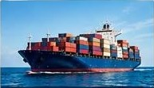
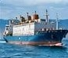
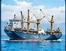
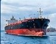
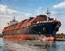
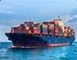

مزیتهای رقابتی ما
هماهنگی روشهای مختلف حمل، برنامهریزی متناسب با نوع کالا و پیگیری مراحل جابهجایی؛ برای ایجاد جریان پیوستهٔ تأمین.
آشنایی بیشتر ←FARA TransLog
پیونددهندهٔ مسیرهای تجاری
فرا ترنسلاگ، بخش تخصصی لجستیک و حملونقل گروه بینالمللی فرا، با رویکردی جامع در زمینه طراحی، سازماندهی و اجرای راهکارهای حملونقل فعالیت میکند. حمل دریایی، هوایی، زمینی و ریلی را در کنار خدمات زنجیره تأمین، متناسب با نوع کالا و نیاز هر محموله دنبال میکنیم.
از برنامهریزی مسیر و هماهنگی مراحل حمل تا تحویل در مقصد، هدف ما ایجاد ارتباط میان ظرفیتهای حملونقل و نیازهای تجاری شماست.
فرا؛ پیونددهندهٔ مسیرهای تجاری، از مبدأ تا مقصد.جابهجایی محمولههای حجیم، کانتینری و صنعتی در مسیرهای ریلی و ترکیبی.
معرفی و شرح خدمات ←حمل داخلی و بینالمللی کالا، محمولههای صنعتی، ترانزیتی و پروژهای.
معرفی و شرح خدمات ←ارسال محمولههای حساس، ارزشمند و زمانمحور از مسیرهای هوایی.
معرفی و شرح خدمات ←
حمل کانتینری، فله خشک و مایع، کالای عمومی و محمولههای پروژهای.
معرفی و شرح خدمات ←با توجه به نوع کالا و نیاز محموله، مسیر مناسب حمل را انتخاب کنید.

کالاهای بستهبندیشده و متنوع

تجهیزات صنعتی و ماشینآلات

محمولههای مایع و فرآوردهها

مواد معدنی، غلات و سایر کالاها

حمل کانتینری بهصورت FCL و LCL
هماهنگی روشهای مختلف حمل، برنامهریزی متناسب با نوع کالا و پیگیری مراحل جابهجایی؛ برای ایجاد جریان پیوستهٔ تأمین.
آشنایی بیشتر ←مواد معدنی، تجهیزات صنعتی، محصولات نفتی و پتروشیمی، کالاهای کشاورزی و کالای عمومی.
مشاهده حوزههای فعالیت ←ترکیب روشهای حمل دریایی، هوایی، زمینی و ریلی بر اساس مسیر، زمان، نوع کالا و نیاز هر پروژه.
مشاهدهٔ معرفی خدمات ←تجارت، صنعت و سرمایهگذاری
گروه بینالمللی فرا در حوزههای تجهیزات صنایع معدنی، حملونقل و لجستیک، صادرات و واردات، نفت و گاز و پتروشیمی، نساجی، عمران و سرمایهگذاری ملکی و کشاورزی فعالیت میکند. هر حوزه صفحهٔ اختصاصی خود را دارد تا معرفی فعالیتها، خدمات و توضیحات کامل آن را بهصورت جداگانه مطالعه کنید.
آشنایی با حوزههای فعالیت و معرفی شرکتها ←گروه بینالمللی فرا